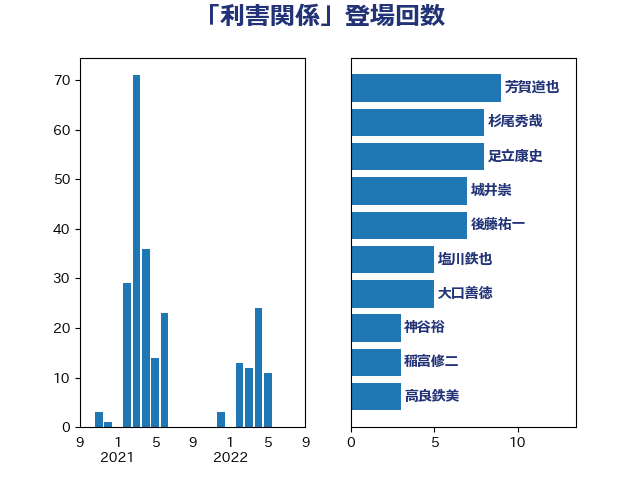

単語「利害関係」

| 芳賀道也 | 国民民主党 | 9 回 |
| 杉尾秀哉 | 立憲民主党 | 8 回 |
| 足立康史 | 日本維新の会 | 8 回 |
| 城井崇 | 立憲民主党 | 7 回 |
| 後藤祐一 | 立憲民主党 | 7 回 |
| 塩川鉄也 | 日本共産党 | 5 回 |
| 大口善徳 | 公明党 | 5 回 |
| 神谷裕 | 立憲民主党 | 3 回 |
| 稲富修二 | 立憲民主党 | 3 回 |
| 高良鉄美 | 無所属 | 3 回 |
| 上川陽子 | 自由民主党 | 2 回 |
| 中谷一馬 | 立憲民主党 | 2 回 |
| 大塚耕平 | 国民民主党 | 2 回 |
| 岡本あき子 | 立憲民主党 | 2 回 |
| 岩谷良平 | 日本維新の会 | 2 回 |
| 岸信夫 | 自由民主党 | 2 回 |
| 柚木道義 | 立憲民主党 | 2 回 |
| 武田良太 | 自由民主党 | 2 回 |
| 田村貴昭 | 日本共産党 | 2 回 |
| 石垣のりこ | 立憲民主党 | 2 回 |
| 青山繁晴 | 自由民主党 | 2 回 |
| 伊藤岳 | 日本共産党 | 1 回 |
| 国定勇人 | 自由民主党 | 1 回 |
| 大西健介 | 立憲民主党 | 1 回 |
| 安江伸夫 | 公明党 | 1 回 |
| 小西洋之 | 立憲民主党 | 1 回 |
| 川合孝典 | 国民民主党 | 1 回 |
| 平井卓也 | 自由民主党 | 1 回 |
| 打越さく良 | 立憲民主党 | 1 回 |
| 本村伸子 | 日本共産党 | 1 回 |
| 柳ヶ瀬裕文 | 日本維新の会 | 1 回 |
| 梶山弘志 | 自由民主党 | 1 回 |
| 横山信一 | 公明党 | 1 回 |
| 櫻井充 | 自由民主党 | 1 回 |
| 沢田良 | 日本維新の会 | 1 回 |
| 浜地雅一 | 公明党 | 1 回 |
| 熊谷裕人 | 立憲民主党 | 1 回 |
| 石川大我 | 立憲民主党 | 1 回 |
| 福山哲郎 | 立憲民主党 | 1 回 |
| 福島伸享 | 無所属 | 1 回 |
| 緑川貴士 | 立憲民主党 | 1 回 |
| 菅義偉 | 自由民主党 | 1 回 |
| 萩生田光一 | 自由民主党 | 1 回 |
| 藤原崇 | 自由民主党 | 1 回 |
| 西村智奈美 | 立憲民主党 | 1 回 |
| 豊田俊郎 | 自由民主党 | 1 回 |
| 重徳和彦 | 立憲民主党 | 1 回 |
| 金田勝年 | 自由民主党 | 1 回 |
| 鈴木義弘 | 国民民主党 | 1 回 |
| 鎌田さゆり | 立憲民主党 | 1 回 |
| 長妻昭 | 立憲民主党 | 1 回 |
| 階猛 | 立憲民主党 | 1 回 |
| 高橋はるみ | 自由民主党 | 1 回 |
| 鬼木誠 | 立憲民主党 | 1 回 |